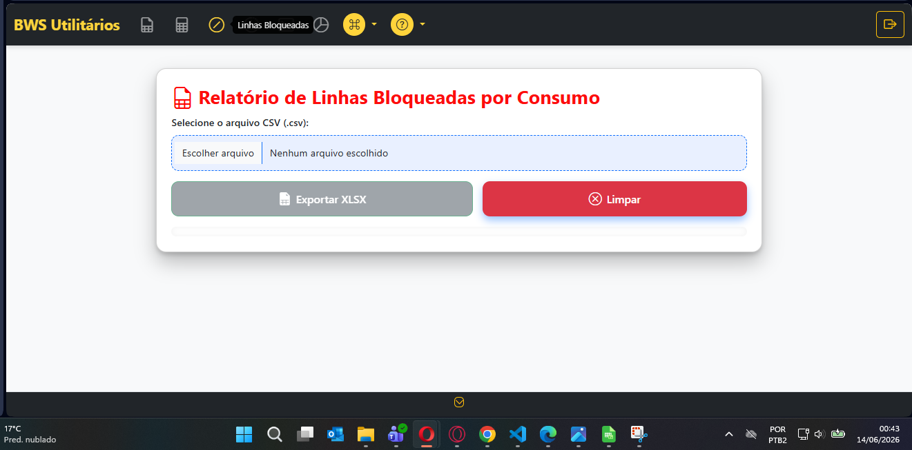
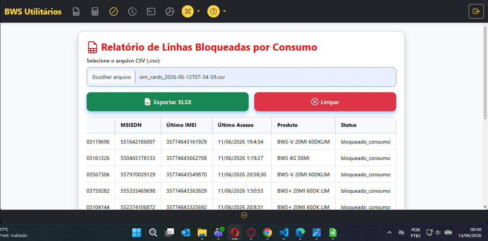
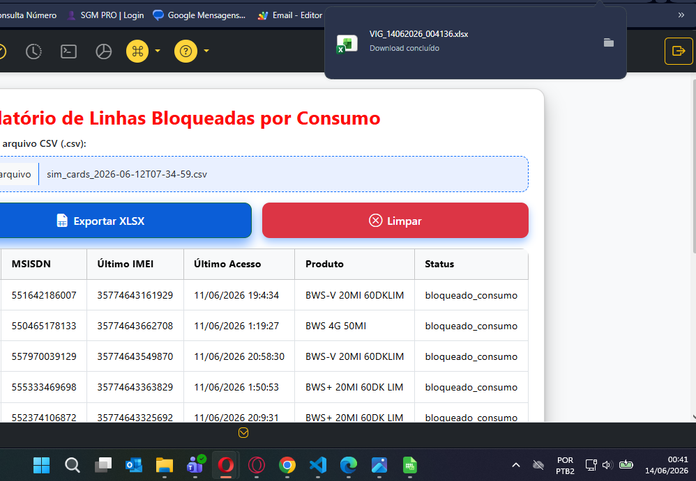
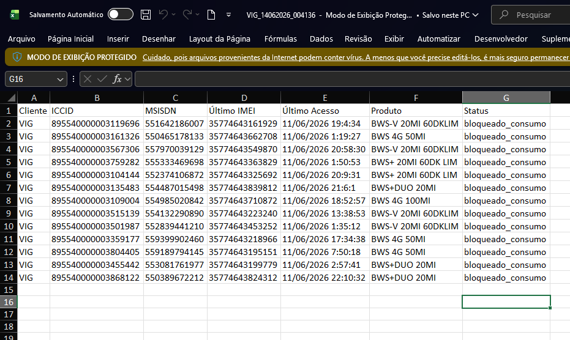

Identifique e exporte todas as linhas bloqueadas por consumo excessivo de dados móveis.
Mesmo formato do CSV de Reset
A ferramenta utiliza o mesmo arquivo CSV dos demais processos — primeira coluna: ICCID | segunda coluna: MSISDN | segunda linha/primeira coluna: Nome da empresa

Na tela principal da ferramenta, faça o upload da base completa do cliente (mesmo CSV usado para carga em massa). O sistema processará automaticamente os dados e identificará todas as linhas da base.

Após o processamento, o sistema exibe todas as linhas que estão bloqueadas por consumo excessivo. O nome do arquivo é capturado automaticamente da primeira coluna, segunda linha do CSV carregado.
O arquivo gerado segue o padrão: NOME_EMPRESA_DATA_HORA.csv

Após visualizar as linhas bloqueadas, clique no botão de download para baixar a planilha formatada, pronta para ser enviada ao cliente.

A planilha baixada contém os seguintes dados organizados por coluna:
ICCID
Código único do chip
MSISDN
Número de telefone
Consumo
Dados consumidos (MB/GB)
Data do Bloqueio
Quando ocorreu o bloqueio
Informação: A planilha apresenta todas as linhas que atingiram o limite de consumo configurado, facilitando o repasse ao cliente para regularização.
1. Upload
Base completa do cliente
2. Filtragem
Identifica bloqueados
3. Formatação
Planilha organizada
4. Exportar
Enviar ao cliente
Bloqueio por Consumo · Saitro